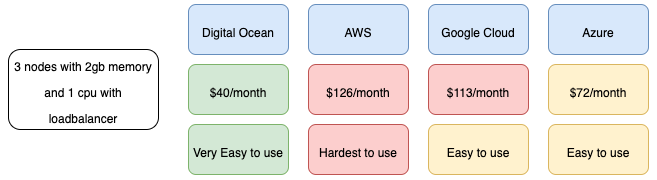

Be able to deploy new/updated functionality without having to deploy the whole application again (which is what we see with hybris as an example)
Be able to test these components with confidence without having to run full end to end tests of the complete infrastructure
Be able to develop locally and deploy to production without running into too many platform differences
What I tried for platform
I tried serverless functions on AWS, and while the running costs were minimal, I ran into development costs on free tier due to copying code locally to S3 to deploy. I ran out of data transfer after only 4 days. The alternative was to develop wholly on AWS to avoid the data transfer costs, but hated their development tools, so i looked elsewhere for this learning exercise, leaving serverless for my chatbot developments
I then tried docker containers (which i have been using for years) and looked at orchestration tools such as ECS and Kubernetes. Since you cannot develop ECS locally, docker for desktop comes with a Kubernetes cluster on any Windows 10 pro or Mac computer. it was an easy choice to go with Kubernetes.
I found it really easy to develop locally and then deploy to the cloud (google in my case since kubernetes is covered by their free credit scheme unlike AWS, and Digital Ocean the easiest and cheapest platform to use), with the main differences being around security and infrastructure, with no changes to the containers as long as all config is setup via environment variables
Skaffold allows you to easily develop and see your changes without having to rebuild the containers, making working with Kubernetes as easy as working with docker containers individually
Googles documentation for Kubernetes is brilliant, and the training available is far superior to ECS.
The main advantage to ECS was the level of integration with AWS services, and since I had no intention of running on AWS for my own projects, ECS was easily ruled out (although I have some courses lined up so I can at least become familiar with it)
Looking at some cloud providers for costs and how easy to use they are

In the end I mainly use Virtual Box to create 3 nodes with 16gb of memory and 6 cpus each, and only use the cloud for learning purposes, when working with GitHub i used Digital Ocean and when working with GitLab I am trying out their integrations with Google Cloud.
Design Approach
Early on I lost focus and more interested in seeing what these Service Meshes were all about, and started breaking all functions out into their own services, using Istio to handle the communications between them. However, It did not take long for twenty services to appear with nested dependencies, and changes to one service to crash others I was not expecting.
Note that this is not the fault of this approach to micro-services, but going immediately to small services leads to configuration management issues, and a constant redesign of existing services which slowed everything down;
The Istio installation installed Prometheus and Jaegar, which helped with the service discovery and monitoring and deployments were reliable, but going immediately to low level services was a mistake and I was not achieving the results I wanted
I then decided to start with functional services, using recommendations from courses and google searching I went with these principles:
Each Service will have its own database, and not access a central database (common agreement that this is the only way to achieve independent services)
I would create a REST API to use handle requests from the clients (I will use graphql later)
Each service would not talk directly to any other, instead using event streaming to handle communications (Again recommended if you wanted independent services)
Technology
I know Python and JavaScript, but since I wanted for this exercise to use the one I was most comfortable with for front end and back end development, I choose to Use ReactJS for the front end (actually NextJS but you will see why later) and NodeJS for the back end (using Typescript, again you will see why later)
I needed a multi platform streaming service that will allow,
Group services so events are only sent to one copy of the service
Allow for messages to be sent to services that were offline
Allow new services to receive the events that they would have received if they were implemented at the start
{kind=link}
{kind=link}
{kind=link}
{kind=link}